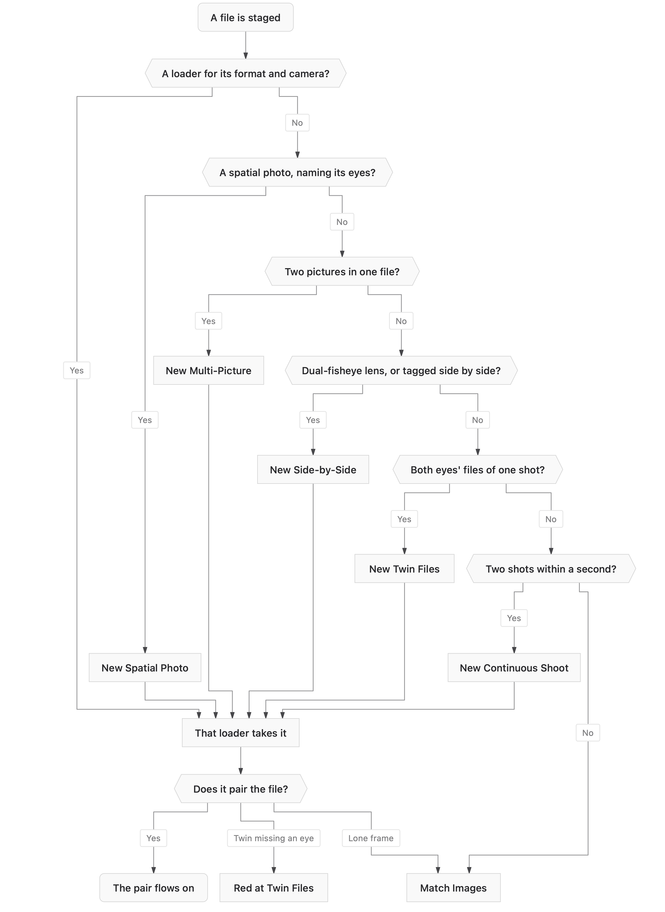

Stereo Dandifier · Help · Links · Support · Privacy
Staging
Where every collection begins: the files to be worked on are gathered here. There is always one Staging node, and it cannot be deleted.
Staging files
- Drop image files or folders from the Finder onto the canvas, or onto the Staging node.
- Or click + on the Staging node and choose them.
Files stay where they are: a collection records where each lies and never copies it. A file with the same name as one already staged is refused.
How a file finds its loader
StereoDandifier examines what has been staged and supplies the loaders it needs. Each loader serves one way of making pairs, one file format and one camera, and takes every staged file of that format and camera. RAW files also get a RAW Develop for each of their loaders. Loaders are never added or removed by hand: they come and go with the files.
The questions below are put to the newly staged files of each format and camera, in order; the first answered yes decides their loader. Each loader's help describes the files it takes.

A file held at Match Images is examined again whenever more files are staged: should a frame taken within a second of it arrive, the two form a sequence.
Actions
- Unstage All — withdraws every file from the collection; the loaders they called into being go with them.
To unstage a file is to forget everything about every pair it was in — its settings, its measurements and its place in any order. The workflow itself, the nodes the operator added and how they are joined, is kept.